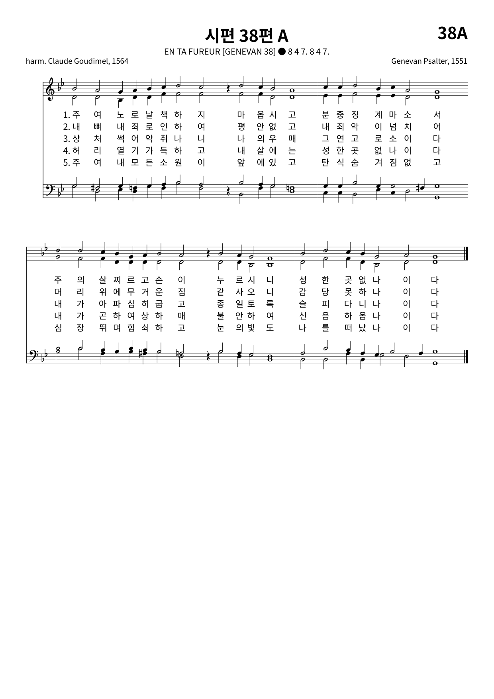

시편 38편 A
EN TA FUREUR [GENEVAN 38] · 8 4 7. 8 4 7.
곡조: Genevan Psalter, 1551 · 화성: Claude Goudimel, 1564 · 가사: 개역한글판 시편 38편 편역(AI 초벌 편역판 · 신학 감수 전) · 5절
시편 38편은 2곡으로 나누어 실었습니다: A B · 이 곡은 시편 38편 가사의 1~5번째 절입니다.
악보 PDF MusicXML(출력용) MusicXML(반주용, 전주·반복 포함) 개역한글 시편 38편 읽기
악보
← 시편 37편 B 목록반주 재생(준비 중)시편 38편 B →
가사
1절
주여 노로 날 책하지
마옵시고
분 중 징계 마소서
주의 살 찌르고 손이
누르시니
성한 곳 없나이다
주여 노로 날 책하지
마옵시고
분 중 징계 마소서
주의 살 찌르고 손이
누르시니
성한 곳 없나이다
2절
내 뼈 내 죄로 인하여
평안 없고
내 죄악이 넘치어
머리 위에 무거운 짐
같사오니
감당 못하나이다
내 뼈 내 죄로 인하여
평안 없고
내 죄악이 넘치어
머리 위에 무거운 짐
같사오니
감당 못하나이다
3절
상처 썩어 악취 나니
나의 우매
그 연고로소이다
내가 아파 심히 굽고
종일토록
슬피 다니나이다
상처 썩어 악취 나니
나의 우매
그 연고로소이다
내가 아파 심히 굽고
종일토록
슬피 다니나이다
4절
허리 열기 가득하고
내 살에는
성한 곳 없나이다
내가 곤하여 상하매
불안하여
신음하옵나이다
허리 열기 가득하고
내 살에는
성한 곳 없나이다
내가 곤하여 상하매
불안하여
신음하옵나이다
5절
주여 내 모든 소원이
앞에 있고
탄식 숨겨짐 없고
심장 뛰며 힘 쇠하고
눈의 빛도
나를 떠났나이다
주여 내 모든 소원이
앞에 있고
탄식 숨겨짐 없고
심장 뛰며 힘 쇠하고
눈의 빛도
나를 떠났나이다